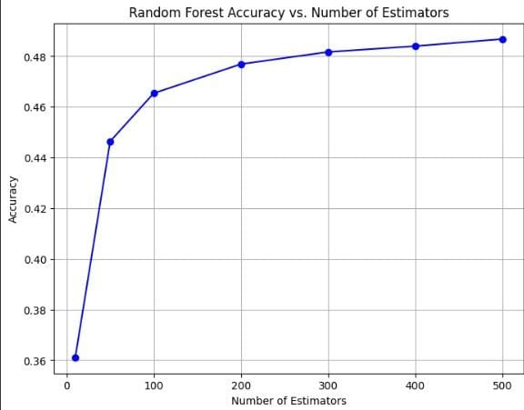
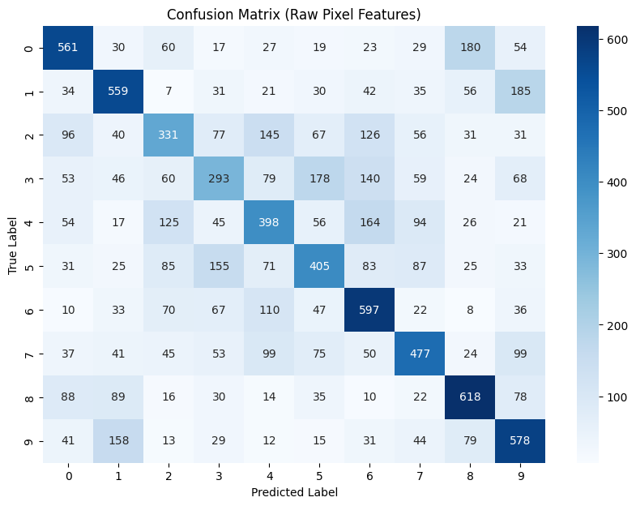
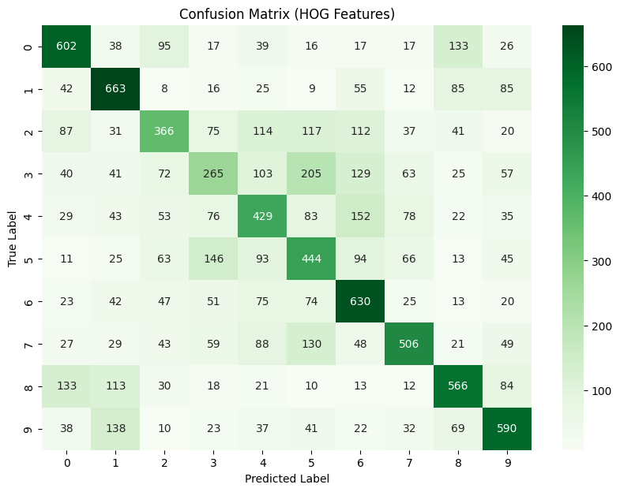
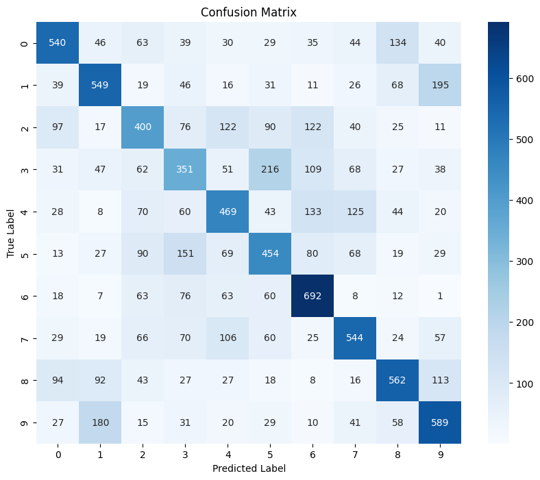
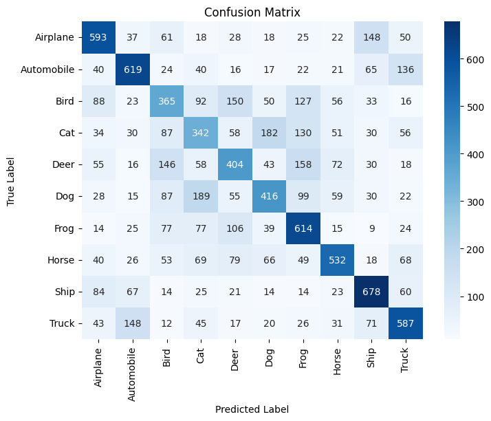
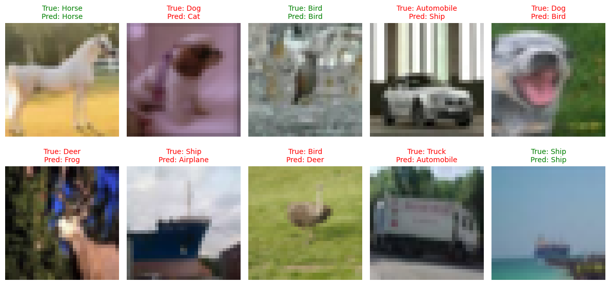
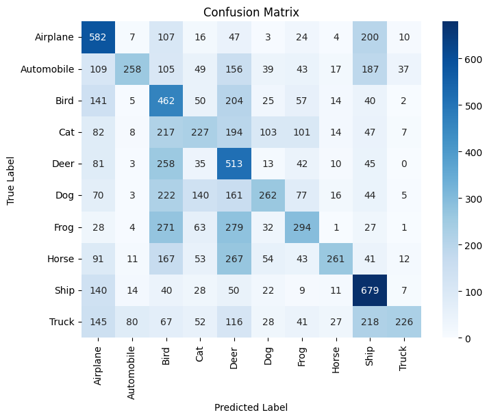
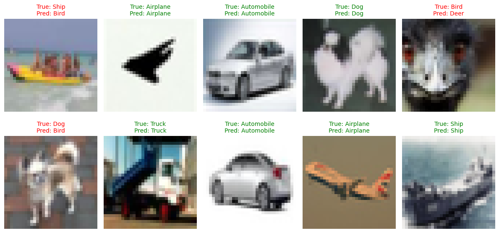

Comparison of ML Techniques for Object recognition
Object recognition is a critical task in computer vision with applications ranging from autonomous vehicles to image-based search engines. In this project, we focus on comparing traditional machine learning techniques—Support Vector Machine (SVM), k-Nearest Neighbors (KNN), and Random Forest— for the task of object classification using the CIFAR-10 dataset.
We explore different feature extraction methods, including raw pixel intensity values, Histogram of Oriented Gradients (HOG), and Principal Component Analysis (PCA), to understand how input representation impacts classification performance. Each model is evaluated using standard metrics such as accuracy and confusion matrix. This study provides insight into which feature-model combination offers the best trade-off between performance and computational cost.
The CIFAR-10 dataset, curated by Alex Krizhevsky, consists of 60,000 32x32 color images in 10 different categories such as airplane, automobile, bird, cat, deer, dog, frog, horse, ship, and truck. The dataset is split into 50,000 training images and 10,000 test images.
Each image is represented as a 32x32x3 RGB matrix. For preprocessing, images were either flattened (for raw pixel input), converted to grayscale and transformed using HOG, or reduced in dimensionality using PCA.
More on CIFAR-10: https://www.cs.toronto.edu/~kriz/cifar.html
We used three core machine learning techniques to classify images in the CIFAR-10 dataset:
For feature extraction, we used:
Raw pixel features represent each image as a flat vector of 3072 values (32x32x3). This method retains all color information but fails to capture spatial relationships between pixels.
Random Forests, due to their robustness, performed decently even with high-dimensional noisy data. However, the model lacks any spatial awareness, so performance is bounded by the inability to detect meaningful patterns like edges or shapes.
In the case of raw pixels, misclassifications are more common between classes with similar color profiles (e.g., "deer" vs "horse").
HOG features capture edge direction and intensity changes, which are crucial for identifying object outlines. We first converted the RGB images to grayscale before applying HOG. While spatial information improved, the lack of color sometimes led to confusion between similarly shaped objects.
With HOG features, the confusion matrix shows improved recognition of classes with distinct shapes (like "airplane" and "ship"), but confusion still arises in visually similar shapes (e.g., "cat" vs "dog").
PCA transforms the original data to a smaller set of principal components while retaining most of the data’s variance. This not only reduces the feature space and noise but also accelerates model training. It retains just enough structure to allow good classification.
Using PCA, the confusion matrix tends to be more balanced, as noise is reduced and only the most relevant information is retained. However, extreme dimensionality reduction might also discard subtle class-specific features, leading to misclassifications in nuanced categories.
Support Vector Machines were trained using PCA-reduced raw pixel features. PCA helped reduce dimensionality from 3072 to 100 components, retaining maximum variance while making the training process faster and more efficient.
We used the RBF (Radial Basis Function) kernel for non-linear classification, and tested with different values of the regularization parameter C.
The plot above shows the variation in accuracy with different values of C. It reveals that very low regularization (C=0.001) underfits the model,
while an optimal value around C=1.0 yields the best generalization on test data.
Despite dimensionality reduction, the model still struggles with fine-grained class differences due to limited feature expressiveness of raw pixel values. However, the PCA preprocessing step significantly improves both training time and generalization compared to unprocessed pixel vectors.
Below is the confusion matrix illustrating how well the SVM performed on each class of CIFAR-10 test data. Diagonal elements represent correct classifications, while off-diagonal values indicate misclassifications.
The model shows stronger performance on visually distinct classes like "Airplane" and "Ship", while it struggles to distinguish similar-looking categories such as "Cat" and "Dog", especially after grayscale and dimensionality reduction.
A visual check of randomly selected predictions helps assess real-world behavior of the model. Correct predictions are labeled in green, and incorrect ones in red.
As shown, the model often performs well on simpler, high-contrast classes, but still struggles with noisy or ambiguous examples where class boundaries are not well-defined. This reaffirms that while SVMs with PCA provide a good baseline, more complex models like CNNs are better suited for deep image understanding tasks.
K-Nearest Neighbors is a lazy, non-parametric learning algorithm that classifies test samples based on the most common label among its k nearest neighbors in the feature space.
For this experiment, each CIFAR-10 image was flattened into a 3072-dimensional vector representing RGB pixel values.
We used the following configuration:
The relatively low accuracy reflects the challenges KNN faces with high-dimensional image data. Since it relies purely on distance calculations in pixel space, it suffers from the "curse of dimensionality" and lacks any abstraction of shapes, edges, or context.
That said, KNN still demonstrates its strength in recognizing visually distinct categories like "ship" or "airplane" when background clutter is minimal.
The confusion matrix indicates that the classifier frequently mislabels visually similar classes — particularly "cat", "dog", "deer", and "horse". These classes share similar textures and color distributions, which creates significant overlap in the raw pixel space.
Below is a visualization of KNN predictions for randomly selected test images. Green-labeled predictions indicate correct classifications, while red-labeled ones indicate errors.
These examples reveal that KNN performs reasonably well when the test image has a close match in the training data, but fails when the image is ambiguous, noisy, or from a class with high intra-class variation.
KNN is a powerful algorithm for low-dimensional or well-clustered datasets. However, CIFAR-10 presents a challenge due to:
Although using a different distance metric (like Manhattan) helped reduce some of the variance compared to Euclidean, the overall architecture of KNN remains inherently limited for this kind of image recognition task.
To push beyond the limits of traditional machine learning techniques, we implemented a Convolutional Neural Network (CNN) — a deep learning architecture designed to learn spatial hierarchies of patterns directly from image data.
Our CNN architecture consists of two main convolutional blocks followed by a fully connected classifier:
The model was trained for 20 epochs using the Adam optimizer and categorical crossentropy loss function, with a batch size of 64
and 20% of the training data used for validation.
The plot above shows a clear upward trend in both training and validation accuracy, with signs of convergence and generalization. Unlike classical models, CNNs are able to capture complex spatial patterns in images, leading to much higher performance.
CNNs use convolutional layers to detect edges, textures, shapes, and eventually abstract concepts like objects. Key advantages over traditional models include:
The CNN significantly outperforms SVM, Random Forest, and KNN, making it the most effective approach for CIFAR-10 in this study. However, it comes at the cost of longer training times and the need for GPU acceleration. Hence, the CNN is able to correctly classify a wide variety of CIFAR-10 images, including those with complex textures or multiple colors. Misclassifications still exist — often between semantically similar classes (e.g., "cat" vs "dog") — but overall accuracy is much higher.